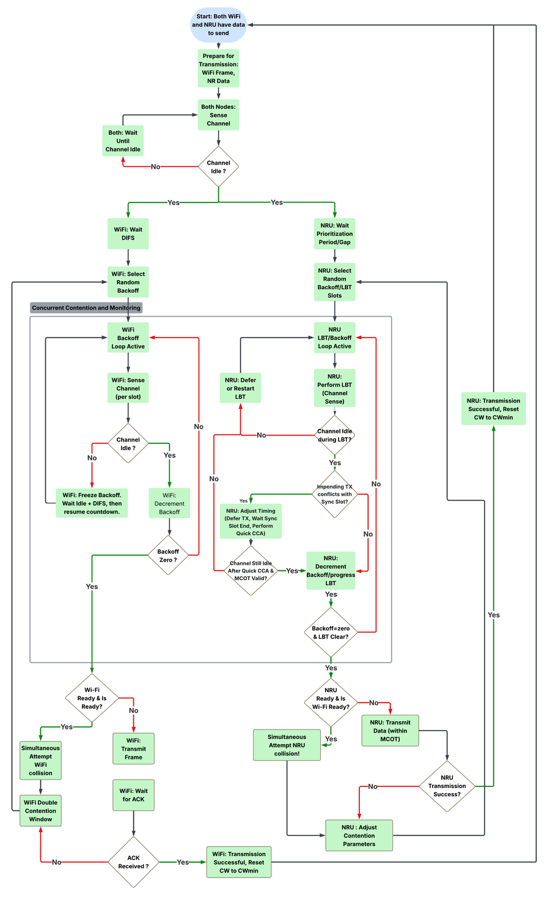
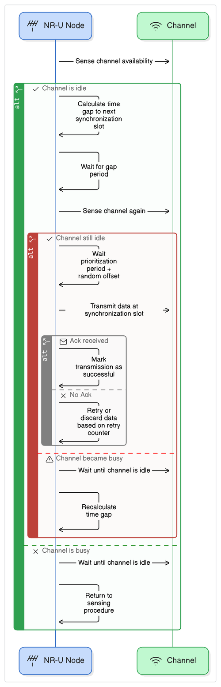
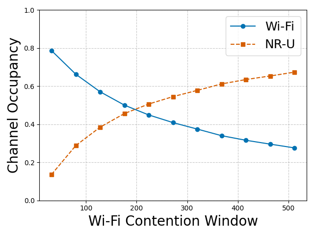
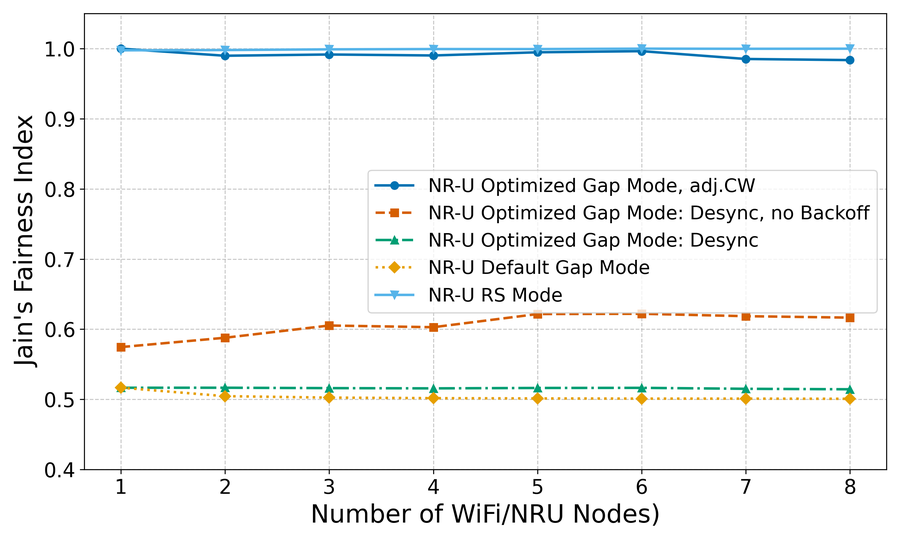
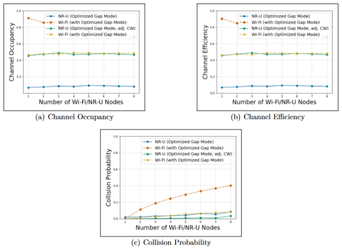
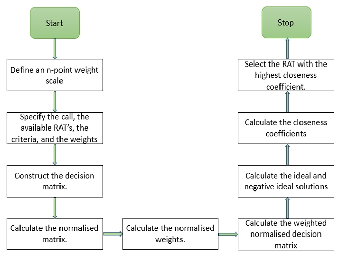
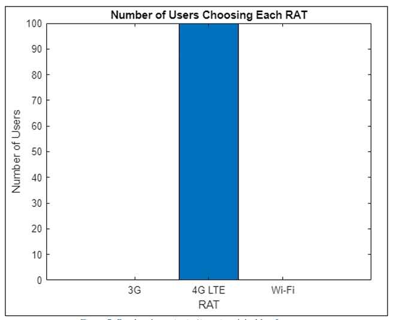
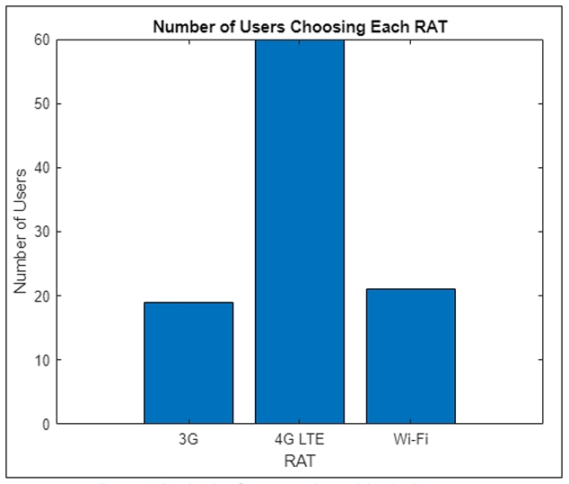
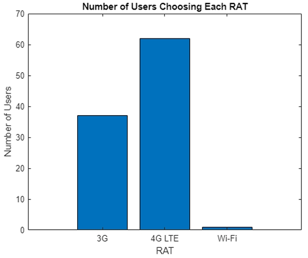

Projects / Work
Coexistence Strategy for 5G NR-U and Wi-Fi
Problem: 5G's expansion into unlicensed spectrum puts it on the same channel as Wi-Fi, and the two use fundamentally different access protocols. Without coordination, one side wins unfairly.
What I did: Extended an existing coexistence simulator and developed a staged mechanism, gNB desynchronization, backoff removal, and density-aware Wi-Fi contention-window tuning, tested across symmetric and asymmetric node deployments.
What came of it: Reduced collision rates to below 5% (NR-U) and below 8% (Wi-Fi), with Jain's Fairness Index above 0.97, matching the fairness of the standard alternative while keeping better efficiency.





TOPSIS-Based RAT Selection
Problem: When multiple radio access technologies (3G, 4G LTE, Wi-Fi) are available, bandwidth, cost, and delay can point toward different choices, no single fixed rule fits every user.
What I did: Implemented a full TOPSIS decision-making pipeline and evaluated it with a MATLAB simulation across 100 users with randomized priority weights.
What came of it: Bandwidth had the largest influence on selection; there is no universally optimal RAT, the best choice shifts entirely with what a user actually prioritizes.



